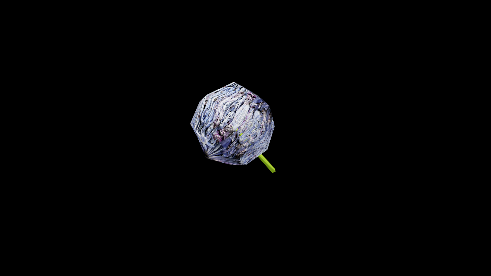

Allium
Globe shaped clusters of starry blooms that emit a sharp, pungnet aroma. They are beloved by healters, their roots and bulbs hold a biting essence that wards against corruption, curses, and the touch of the undead. Crushed fresh allium releases a potent oil used in protective wards, barrier salves, and truth serums that compel honesty.
In ancient grimoires, it is said that silver petaled allium blooms only bloom under a blood moon and can be brewed into an elixir that reveals hidden lies or banishes shadow-dwelling creatures.
While common forms grow in sunlit fields and kitchen gardens, wild mountain allium is far more dangerous to harvest- its sharp scent draws hungry nightbeasts that feed on its rare magic vitality.

Item stats
Item stats
| Weight | 0.0 |
|---|---|
| Value | 0.0 |
| Armor | 0.0 |